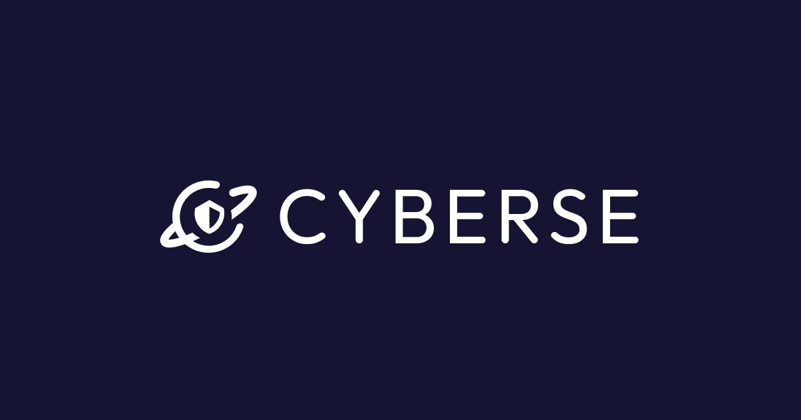
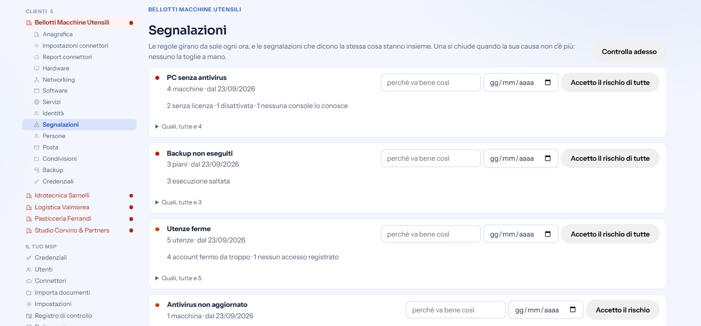

Dal 2000 · Novellara (RE)
L'Azienda
F.R. di Busato Fausto è un'impresa individuale nata nel marzo 2000 in provincia di Reggio Emilia. Il titolare, Fausto Busato, lavora in ambito informatico dal 1996 al fianco di aziende del territorio.
Negli anni l'attività si è ampliata: consulenza per l'acquisto di prodotti informatici, realizzazione di reti, pagine web, software personalizzato e soluzioni AI su misura.
Oggi, anche grazie a diverse collaborazioni, siamo in grado di affiancare il cliente in un mondo — quello informatico — in continua evoluzione, individuando le soluzioni più consone al suo modo di lavorare.
Ci rivolgiamo soprattutto a piccole e medie imprese, studi professionali e attività che cercano un riferimento informatico affidabile: sul territorio reggiano e non solo, anche da remoto.
Anno di fondazione dell'azienda a Novellara, nel cuore della provincia reggiana.
Inizio delle prime collaborazioni informatiche e di disegno tecnico con le aziende del territorio.
Rivenditori e partner di canale di Microsoft, Adobe, Dell Technologies, WatchGuard, Acronis e Lenovo.
Certificazioni ufficiali su protezione dei dati e virtualizzazione (Acronis e VMware) e sul BIM.
Un solo referente conosce la tua infrastruttura, mantiene coerenti le scelte nel tempo e ti evita di coordinare fornitori che non si parlano.
Per i problemi urgenti ci colleghiamo subito al tuo computer, con il tuo consenso e la partecipazione dell'operatore. In sede quando serve.
Configurazioni scelte sulle esigenze reali, senza sprechi: spendi il giusto, e non paghi per ciò che non ti serve.
Dall'assistenza quotidiana allo sviluppo di soluzioni su misura: un unico interlocutore che segue a 360 gradi l'informatica, la sicurezza e la conformità della tua azienda.
Prodotti e servizi
Dall'assistenza quotidiana allo sviluppo di soluzioni su misura, con un percorso che non cambia: si analizza, si progetta, si realizza e si resta a disposizione nel tempo.
Gestionali, automazioni, applicazioni web, soluzioni cloud e di intelligenza artificiale: software su misura progettato attorno al tuo modo di lavorare, dall'analisi dei requisiti fino all'implementazione.
Individuiamo con te le soluzioni più consone alle tue esigenze e ti seguiamo nella loro realizzazione, con interventi rapidi anche in assistenza remota.
Dopo un'attenta valutazione delle esigenze forniamo PC, server, componenti e accessori dei marchi più affidabili, come Dell e Lenovo, insieme ai software più adatti, con licenze in regola e configurate a dovere.
Ti affianchiamo nell'adeguamento al GDPR e alla direttiva NIS2 (D.Lgs. 138/2024): analisi dei rischi, procedure, informative e misure di sicurezza per la protezione dei dati aziendali.
Progettazione e gestione di reti aziendali protette: firewall, segmentazione, backup e difesa dei dati con soluzioni WatchGuard e Acronis.
Teniamo sotto controllo domini e siti e segnaliamo con regolarità i problemi di sicurezza e conformità, citando la norma e come intervenire.
Diagnosi e riparazione di PC, server, periferiche e apparati di rete, con interventi puntuali e celeri, in sede o da remoto.
Assistenza remota
L'assistenza remota risolve i piccoli problemi in modo rapido e con la partecipazione dell'operatore, senza attendere un intervento in sede.
Sviluppo software · Il metodo
Anche noi usiamo gli strumenti più moderni, intelligenza artificiale compresa, come un buon artigiano usa i suoi attrezzi migliori. Ma un attrezzo non decide cosa costruire e non controlla che il pezzo sia giusto: quello lo fanno il metodo e chi ci lavora. Ogni funzione, grande o piccola, fa la stessa strada.
Che cosa la funzione deve fare, per chi, e come capiremo che è giusta: i criteri di accettazione si concordano all'inizio, così alla fine non si discute di impressioni.
Ogni funzione nasce con i suoi test automatici, che girano a ogni modifica: se uno solo fallisce, la versione non esce.
Sull'archivio reale dell'azienda, non su esempi inventati. Quando il programma ne sostituisce un altro, il vecchio diventa il metro di paragone.
Ogni modifica passa da occhi freschi che non l'hanno scritta: ogni osservazione si corregge, oppure si accetta per iscritto spiegando perché.
Ogni versione si controlla prima e dopo l'installazione, e si sa sempre come tornare a quella di prima. Nessuna sorpresa il lunedì mattina.
Alcuni progetti Ogni progetto nasce da un problema concreto
Le regole di un programma di fine anni Novanta, ritrovate una per una e trasformate in distinte che l'azienda modifica da sé, provate su decine di migliaia di prodotti già realizzati.
Tiene d'occhio un sito a ogni giro: dice cosa lo espone, cosa non rispetta le regole e come si sistema, citando la norma esatta e non un voto da interpretare.
Un secondo cervello digitale che raccoglie e collega la conoscenza dell'azienda — decisioni, progetti, regole e clienti — per le persone e per le intelligenze artificiali.
Governa l'intero viaggio di un reso e-commerce, dalla richiesta al rimborso, mentre il cliente riceve a ogni passo l'email giusta. Interamente serverless.

Prodotto · Documentazione di rete
Chi gestisce l'informatica di altre aziende custodisce decine di reti, e di solito le affida a documenti che invecchiano il giorno dopo averli scritti. Cyberse li sostituisce con un archivio vivo: legge da solo le console e gli apparati già in uso, tiene le password in una cassaforte a parte e segnala da solo backup saltati, PC senza antivirus e account a rischio.
Lo usiamo ogni giorno sulle reti dei nostri clienti. Sei un MSP? Proviamolo su un tuo cliente.
Apparati, persone, backup, segmenti e credenziali nello stesso posto, cercabili in un campo.
Ogni dato dice da dove viene e quando è stato visto l'ultima volta. Il vecchio si riconosce.
Cassaforte cifrata dietro un secondo fattore. Ogni lettura resta scritta, ogni cliente è isolato.

Le segnalazioni: le regole girano da sole, e quelle che dicono la stessa cosa stanno insieme. Schermata dall'ambiente dimostrativo, con aziende inventate.
Se due fonti si contraddicono, Cyberse lo dice invece di scegliere in silenzio. L'elenco è fatto per crescere: una console nuova si aggiunge.
Prodotto · Il gestionale per le piccole aziende
Una piccola azienda scrive bolle e fatture, e poi rifà su un foglio a parte scadenze, IVA e previsione della banca. Con frGest un documento, quando lo si emette, muove da solo magazzino, IVA e scadenze, e le fatture dei fornitori si caricano dai file dell'intermediario invece di ribatterle. Si lavora dal browser, anche in più persone insieme.
Rifatto da capo e online da settembre 2026: vent'anni di mestiere dentro, un motore nuovo sotto.
Ogni movimento viene da un documento. Nessun saldo è tenuto a mano.
frGest prepara i file XML, controllati sullo schema ufficiale, e legge quelli dei fornitori, anche firmati o in archivi zip. A trasmetterli e riceverli è l'intermediario che avete scelto.
Registri vendite e acquisti, liquidazione periodica, comunicazione trimestrale e acconto di dicembre: i numeri vengono dai documenti, quindi tornano.
Il costo di ogni carico viene dalla fattura del fornitore, con le spese ripartite. Valore a costo medio ponderato, FIFO o ultimo costo, e ubicazioni.
Scadenzari di clienti e fornitori, più banche con il saldo previsto mese per mese, distinte RIBA in formato CBI e bonifici SEPA con i loro esiti.
Abbonamenti con la loro periodicità, pacchetti prepagati scalati dal registro degli interventi, commesse con il margine contro il previsto.
Senza buchi né doppioni anche in più persone. Emesso, il documento resta com'era: una fattura vecchia non cambia se domani cambia un listino.
Non si ricomincia da zero: frGest carica l'archivio del programma precedente — anagrafiche, listini, documenti col loro numero originale, incassi, giacenze e interventi. Dall'archivio di un'azienda sono entrati 5.381 documenti su 5.382. Si parte da una prova sul vostro archivio.
Certificazioni e formazione
Certificazioni ufficiali rilasciate da enti e produttori riconosciuti e formazione specialistica: privacy e conformità normativa, protezione dei dati, continuità operativa, virtualizzazione e gestione delle informazioni nel BIM.
Acronis Academy · Sales
Acronis Academy · Cloud Tech
VMware
VMware
Certificata la persona: Fausto Busato. Gestisce l'ambiente di condivisione dei dati di una commessa BIM, secondo le norme UNI 11337-7:2018 e UNI/PdR 78:2020.
Certificato n° 26-02391 · scadenza 27/10/2031 · registro ICMQ
Federprivacy, frequentato da Fausto Busato
Wolters Kluwer, frequentato da Fausto Busato
Associazioni: Fausto Busato è Socio Membro di Federprivacy, codice FP-16198.
Rivenditori e partner di canale
Contatti
Scrivici, chiamaci o vieni a trovarci: individueremo insieme la soluzione più adatta alla tua azienda, senza impegno.
Per informazioni, preventivi o richieste di assistenza:
fausto@fr-busato.it
329 158 6865
Via Marzabotto, 42017 Novellara (RE)
Al fianco delle aziende delle province di Reggio Emilia e Modena, e anche da remoto.
www.fr-busato.it
Servizi, progetti, certificazioni e novità.
Per gli interventi urgenti è attivo il collegamento remoto con operatore: dal sito, «Contatta un operatore».
Come si comincia
Partiamo dalle tue esigenze e dai problemi concreti da risolvere.
Le soluzioni più adatte, spiegate in modo semplice, con tempi e un preventivo chiari.
Ti seguiamo nella realizzazione e restiamo raggiungibili nel tempo, anche da remoto.
Microsoft e Microsoft 365 sono marchi del gruppo di società Microsoft. Dell Technologies, Dell e altri marchi sono marchi di Dell Inc. o delle sue sussidiarie. WatchGuard e WatchGuardONE sono marchi registrati o marchi di WatchGuard Technologies, Inc. negli Stati Uniti e/o in altri paesi. Acronis® è un marchio registrato di Acronis International GmbH e/o delle sue affiliate negli Stati Uniti e in altri paesi. Adobe è un marchio registrato o un marchio di Adobe negli Stati Uniti e/o in altri paesi. Lenovo è un marchio registrato o un marchio commerciale di Lenovo. Federprivacy® è un marchio registrato dell'Associazione Federprivacy. Gli altri marchi citati appartengono ai rispettivi titolari.
Edizione novembre 2026